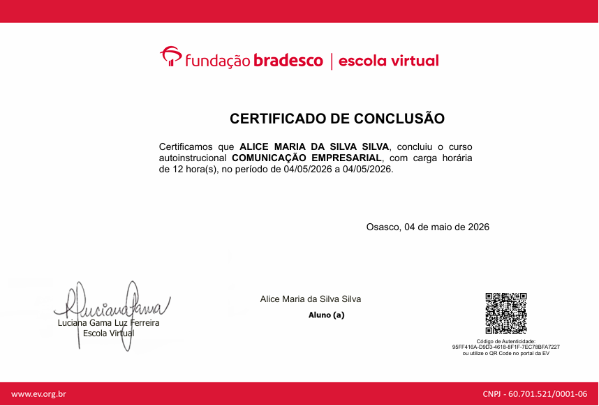

Alice Maria da Silva
Cybersecurity Student & Front-End Developer
Sobre Mim
"A tecnologia conecta pessoas — e eu estou aqui para isso."
Sou estudante de tecnologia apaixonada por desenvolvimento web, segurança digital e inovação. Possuo formação técnica em Desenvolvimento de Sistemas pelo IFPE, onde participei de projetos acadêmicos voltados para tecnologia e impacto social.
Atualmente, curso Segurança Cibernética na Gran Faculdade, ampliando meus conhecimentos em proteção digital, análise de vulnerabilidades e boas práticas de segurança da informação.
Busco oportunidades que me permitam crescer profissionalmente, aplicar meus conhecimentos em projetos reais e contribuir com soluções que gerem valor por meio da tecnologia.
Minha Jornada
🎓 Técnico em Desenvolvimento de Sistemas
IFPE Jaboatão dos Guararapes
🛡️ Segurança Cibernética
Gran Faculdade
🚀 Projetos de Desenvolvimento Web & Cybersecurity
Em constante evolução
Meus Projetos
Direto do GitHub — repositórios públicos atualizados automaticamente.
Carregando repositórios...
Habilidades
Tecnologias e áreas que fazem parte da minha jornada.
Ferramentas
Áreas de Interesse
Abra o terminal e digite help pra explorar
Certificados
Certificações e cursos que contribuíram para minha formação profissional.

Python Essentials 1
Cisco Networking Academy
Curso focado em fundamentos de programação com Python, lógica de programação e desenvolvimento de projetos práticos. Durante a formação, desenvolvi aplicações e fortaleci habilidades de resolução de problemas e raciocínio lógico.

AI-900 Fundamentos de IA no Azure
Bradesco
Formação voltada aos conceitos de Inteligência Artificial, Machine Learning e serviços de IA na plataforma Azure. O curso ampliou minha compreensão sobre aplicações práticas de IA em soluções tecnológicas.

Comunicação Empresarial
Bradesco
Curso focado no desenvolvimento da comunicação profissional, escrita corporativa, organização de ideias e relacionamento interpessoal, fortalecendo habilidades essenciais para trabalho em equipe.

Administrando Banco de Dados
Bradesco
Formação voltada à organização, gerenciamento e manipulação de dados, com introdução a SQL e conceitos fundamentais de banco de dados para aplicações e sistemas.

Análise de Dados e Inteligência de Negócios
Gran Cursos/Faculdade
Curso focado em análise de dados, geração de insights e apoio à tomada de decisões. Desenvolvi habilidades analíticas para transformar informações em soluções estratégicas.

Conceitos de Aprendizagem Criativa
Bradesco
Formação baseada em metodologias de aprendizagem ativa, criatividade e resolução de problemas. O curso incentivou o pensamento crítico, a inovação e a construção prática do conhecimento.
Entre em contato comigo
Vamos conversar? Escolha um canal de acesso abaixo.